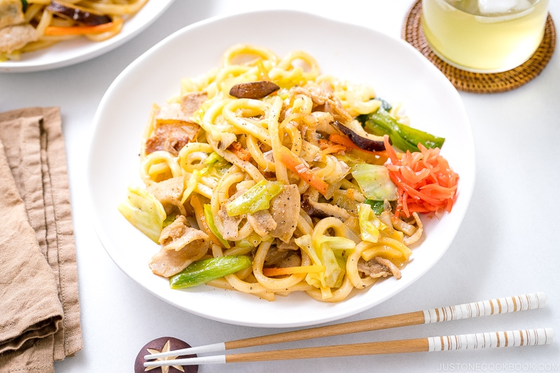

Yaki Udon

Description
Yaki-udon is a Japanese stir-fried noodle dish made with thick, white udon noodles. The dish is made with a variety of ingredients, such as pork, chicken, seafood, and vegetables. The noodles are stir-fried with a savory sauce made from soy sauce, mirin, and dashi, and are often garnished with toppings such as green onions, sesame seeds, and pickled ginger.
Recipe
Ingredients
- 500g udon noodles
- 200g of sliced pork belly
- 1 cabbage, loosely chopped
- 1 carrot, diced
- 2 shiitake mushrooms, sliced
- 1 green onion, chopped
- 1 large onion, sliced
- 1/2 tsp of salt
- 1/4 tsp of black pepper
Seasoning
- 3 Tbsp mentsuyu
- 1 tsp soy sauce
Steps
To Prepare the Ingredients
- Slice 0.5 onion thinly.
- Remove the tough core of 2–3 leaves green cabbage. Then, cut the leaves into pieces that are 1 inch (2.5 cm) square.
- Peel 5 cm carrot and cut it into thin slabs. Then, julienne the slabs into thin strips 2 inches (5 cm) long.
- Discard the tough stems of 2 shiitake mushrooms and slice the mushroom caps.
- Cut 2 green onions/scallions into 2-inch (5 cm) pieces. Cut 170 g sliced pork belly slices into 1-inch (2.5 cm) pieces.
- When the water is boiling, blanch 2 servings udon noodles (frozen) for 30–40 seconds or until it just starts to loosen up. If you‘re using dry udon noodles, boil them according to the package instructions. Transfer the noodles to a plate and set aside.
To Stir-Fry the Yaki Udon
- Preheat a large frying pan over medium heat. When the pan is hot, add 1 Tbsp neutral oil and distribute it evenly. Add the pork belly and stir-fry.
- Season the pork with 0.13 tsp Diamond Crystal kosher salt and 0.13 tsp freshly ground black pepper. Cook until it‘s no longer pink.
- Add the onion slices and stir-fry until tender.
- Add the cabbage, carrot strips, shiitake mushrooms, and green onions. Mix it all together until the ingredients are coated with oil.
- Cover with a lid and reduce the stove‘s heat to low. Let the ingredients steam for 3 minutes, or until the vegetables are slightly wilted.
- Add the udon noodles to the pan and toss with a pair of tongs to combine. (It‘s a lot easier to use tongs than two spatulas).
- Add the ingredients for seasonings
- Mix it all together. Taste and adjust the seasoning, adding more ground black pepper and salt to your liking.